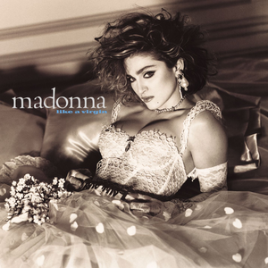
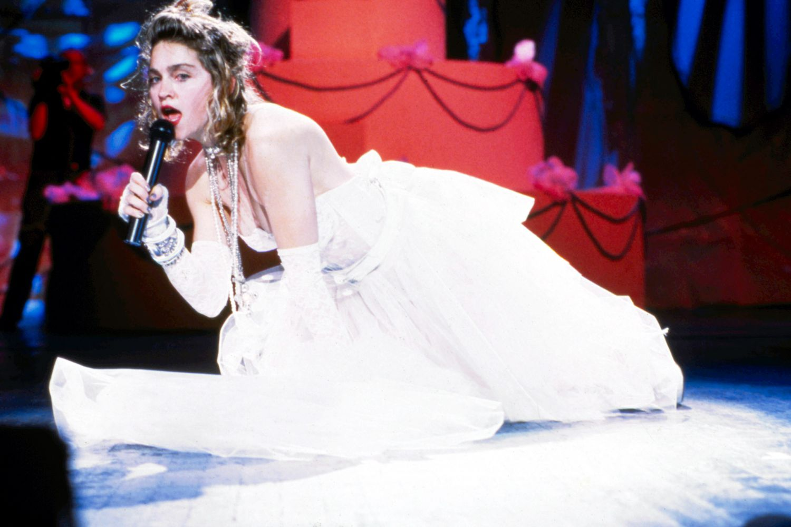
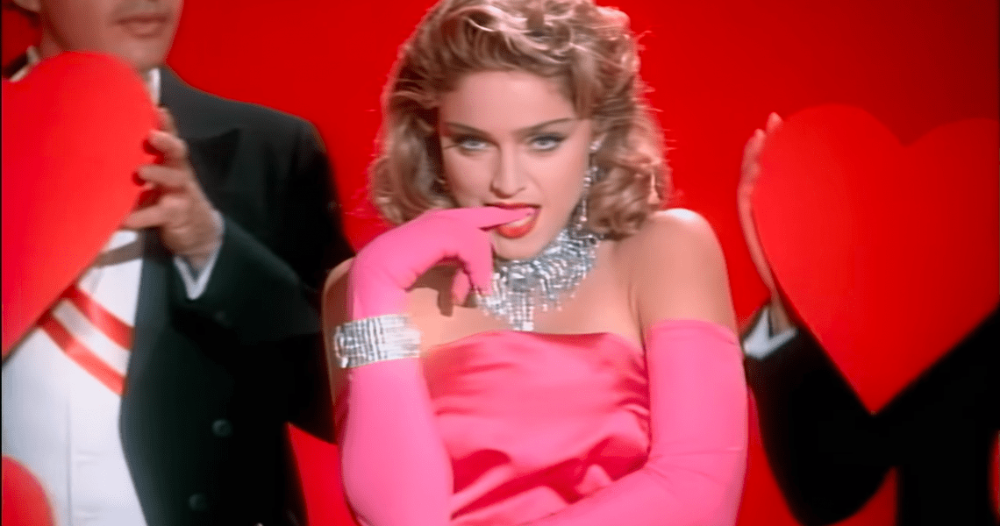
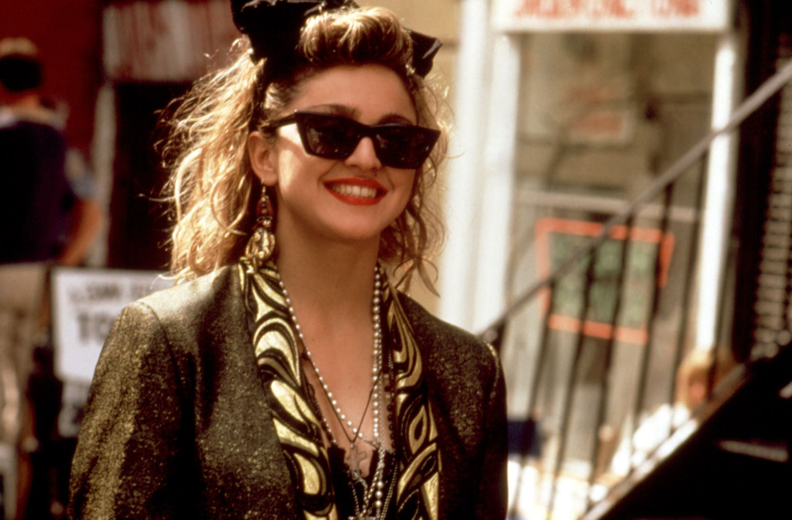

Like a Virgin es el segundo álbum de estudio de Madonna. Lanzado a la venta en 1984, fue su consolidación en el pop y una de sus eras más exitosas. La canción "Like a Virgin" fue su primer #1 en el Billboard Hot 100 de E.E.U.U. y logró mantenerla en la cima por 6 semanas, mientras que la canción "Material Girl" alcanzó el puesto #2. El álbum no recibió críticas tan positivas como su debut, pero fue mucho más exitoso que este. El estilo y apariencia de Madonna fueron toda una sensación en su momento y llegaron a crear la moda "Madonna Wannabe". Además, los sencillos "Into the Groove" y "Crazy For You", el segundo #1 de Madonna, fueron añadidos a ediciones posteriores del álbum debido a su gran éxito. Sónicamente, Madonna continúa el sonido pop que introdujo e su debut y lo perfecciona para las radios con la ayuda del productor Nile Rodgers. El álbum produjo 5 canciones top 10 y se mantuvo en la cima del Billboard 200 de E.E.U.U. por 3 semanas.

Controversial presentación de Madonna cantando "Like a Virgin" en un vestido de bodas durante los primeros VMAs de 1984.

Madonna haciendo un homenaje a Marilyn Monroe en el video musical de "Material Girl".

Madonna en la película "Desperately Seeking Susan" de 1985.